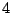
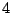

67. Finding Motifs with
Bipositional Profiles
Alkes Price,1 Narayan Ramabhadran,1 Pavel Pevzner1
Keywords: motif finding, pattern
discovery, regulatory motifs
Early work on the motif finding problem was dominated by
profile-based approaches, in which each position of the motif is
modeled by probabilities for each nucleotide, estimated via Gibbs
sampling ([5]) or the EM
algorithm ([1]). More
recently, much work has been done on pattern-based approaches, in
which each position of the motif is modeled by a single consensus
nucleotide with some probability of a mutation. Pevzner and Sze,
2000 [6] observed that
profile-based approaches were unable to solve the following Motif
Challenge Problem: given a sample of  sequences,
each
sequences,
each  nucleotides long and each
containing a pattern of length
nucleotides long and each
containing a pattern of length  with
with
 mutations, find the pattern. Since
then, various pattern-based algorithms have solved the Motif
Challenge Problem, both for and for
larger values of
mutations, find the pattern. Since
then, various pattern-based algorithms have solved the Motif
Challenge Problem, both for and for
larger values of  , with decreasing speed
and increasing probability of success ([6],[2],[4],[3]).
, with decreasing speed
and increasing probability of success ([6],[2],[4],[3]).
We propose to solve the Motif Challenge Problem
very quickly by following the pattern-based MULTIPROFILER algorithm
[4], which uses
multipositional profiles to simultaneously correct all 4 incorrect
positions of a putative motif occurrence, with two key
modifications. First, we will use bipositional profiles to correct
only 2 of the 4 incorrect positions of a putative motif occurrence,
with the remaining 2 incorrect positions to be (more easily)
corrected in a second iteration. Second, we will decide which
corrections to attempt using a more powerful profiling method,
which is only applicable to this iterative approach.
We first review the MULTIPROFILER algorithm
[4], for .
For each of  reference sequences, for each
reference sequences, for each
 -mer
-mer  in that sequence,
might be  mutations
away from the pattern (if it is the pattern occurrence). We
count, for each 4-wordlet
in that sequence,
might be  mutations
away from the pattern (if it is the pattern occurrence). We
count, for each 4-wordlet  consisting
of positions of and new
values for those positions, the number of other sequences
which contain an -mer which both belongs to
consisting
of positions of and new
values for those positions, the number of other sequences
which contain an -mer which both belongs to
 , and agrees with . (This can be done in a single pass through the
other sequences, and does not require separate work for each
.) If this number exceeds a
threshold
, and agrees with . (This can be done in a single pass through the
other sequences, and does not require separate work for each
.) If this number exceeds a
threshold  , then corrected by might be the
correct pattern, and we perform additional work to check if
this is the case.
, then corrected by might be the
correct pattern, and we perform additional work to check if
this is the case.
We now describe our iterative algorithm, in the
case of . For each of reference sequences, for each -mer
in that sequence, might be mutations away from the
pattern (if it is the pattern occurrence). We count, for each
2-wordlet consisting of 2 positions
of and new values for those positions, the
weighted number of other sequences which contain an
-mer which both belongs to
 , for some
, for some
 , and agrees with
. The number is weighted to give more
credit for lower values of
, and agrees with
. The number is weighted to give more
credit for lower values of  according to
log likelihood ratios which are described below. If this number
exceeds a threshold
according to
log likelihood ratios which are described below. If this number
exceeds a threshold  , then
corrected by might be only
, then
corrected by might be only  mutations away from the pattern, and we perform
additional work. Specifically, the additional work we perform
is a second iteration of the algorithm.
mutations away from the pattern, and we perform
additional work. Specifically, the additional work we perform
is a second iteration of the algorithm.
The log likelihood ratios we mentioned above are
the expressions
where  is valid means that
is 4 mutations away from the pattern and
corrects 2 of those 4 mutations, and
is the minimum distance from
among -mers agreeing with
in the (non-reference) sequence being
evaluated. Routine calculations show that the cases
is valid means that
is 4 mutations away from the pattern and
corrects 2 of those 4 mutations, and
is the minimum distance from
among -mers agreeing with
in the (non-reference) sequence being
evaluated. Routine calculations show that the cases
 produce different values
produce different values
 . The weighted number of
sequences described above is the sum over all (non-reference)
sequences of values
, which is equivalent up to
a constant to the sum of values
. The weighted number of
sequences described above is the sum over all (non-reference)
sequences of values
, which is equivalent up to
a constant to the sum of values
 over
sequences where
over
sequences where
 . We note that if we are trying
to correct 4 positions of in a single
iteration, the only relevant cases are
. We note that if we are trying
to correct 4 positions of in a single
iteration, the only relevant cases are  and
and
 , thus the weighted number of
sequences is equivalent up to a constant to a simple count and
there is no advantage to computing the log likelihood
ratios.
, thus the weighted number of
sequences is equivalent up to a constant to a simple count and
there is no advantage to computing the log likelihood
ratios.
Preliminary results indicate that, for
 and parameters and
and parameters and  chosen to produce
a success rate very close to 1, the iterative algorithm solves
the Motif Challenge Problem almost instantly for , with the speed improvement over other motif
finding algorithms slowly degrading as is
increased.
chosen to produce
a success rate very close to 1, the iterative algorithm solves
the Motif Challenge Problem almost instantly for , with the speed improvement over other motif
finding algorithms slowly degrading as is
increased.
- 1
- Bailey T. L. and Elkan C. 1995. Unsupervised learning of
multiple motifs in biopolymers using expectation maximization.
Machine Learning 21: 51-80.
- 2
- Buhler J. and Tompa M. 2001. Finding motifs using random
projections. Proc. of the 5th RECOMB, pages 69-76.
- 3
- Eskin E. and Pevzner P. 2002. Finding composite regulatory
patterns in DNA sequences. Bioinformatics, Supplement
1:S354-363. Proc. of the 10th ISMB.
- 4
- Keich U. and Pevzner P. 2002. Finding motifs in the twilight
zone. Proc. of the 6th RECOMB, pages 195-204.
- 5
- Lawrence C., Altschul S., Boguski M., Liu J., Neuwald A. and
Wootton J. 1993. Detecting subtle sequence signals: a Gibbs
sampling strategy for multiple alignment. Science 262:
208-214
- 6
- Pevzner P. and Sze S. 2000. Combinatorial approaches to finding
subtle signals in DNA sequences. Proc. of the 8th ISMB,
pages 269-278.
Footnotes
- ... Price,1
- Department of Computer Science and Engineering, University of
California at San Diego, La Jolla, CA 92093-0114. Email:
aprice@cs.ucsd.edu;
nramabha@cs.ucsd.edu;
ppevzner@cs.ucsd.edu
2003-04-07